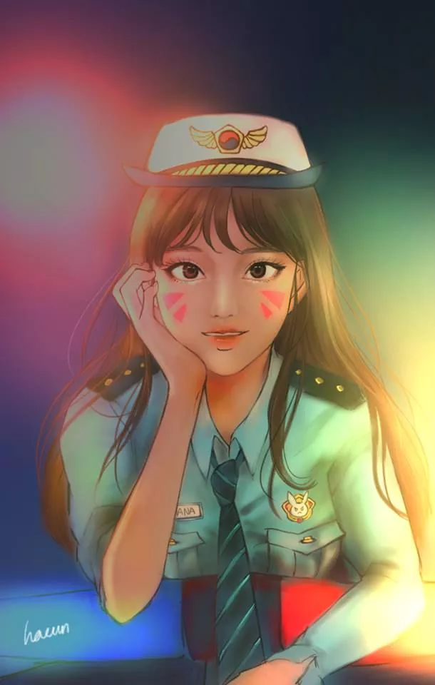

송하나는 원래 프로게이머로서, 지금은 그 실력을 발휘하여 최첨단 로봇을 조종하며 조국을 수호한다.
20년 전, 동중국해 깊은 곳에서 튀어 나온 거대한 옴닉 괴물이 대한민국을 공격했다. 대한민국은 그 거인 같은 기계를 가까스로 파도 속으로 돌려 보냈지만, 그 과정에서 해안 도시들이 엄청난 피해를 입었다. 이에 대한민국 정부는 옴닉의 위협에서 도시를 보호하고자 'MEKA'라 불리는 중장갑 무인 조종 로봇 부대를 창설했다.
송하나는 자신이 맡은 임무 또한 일종의 게임처럼 여기며, 조국을 지키기 위해 언제든 출동하여 다른 대원들과 함께 대담하게 전장에 돌진한다. 최근 그녀는 사랑하는 팬들을 위해 자신의 전투를 스트리밍하기 시작했고, 추종자가 점점 늘어 감에 따라 세계적인 인기를 얻게 되었다.
